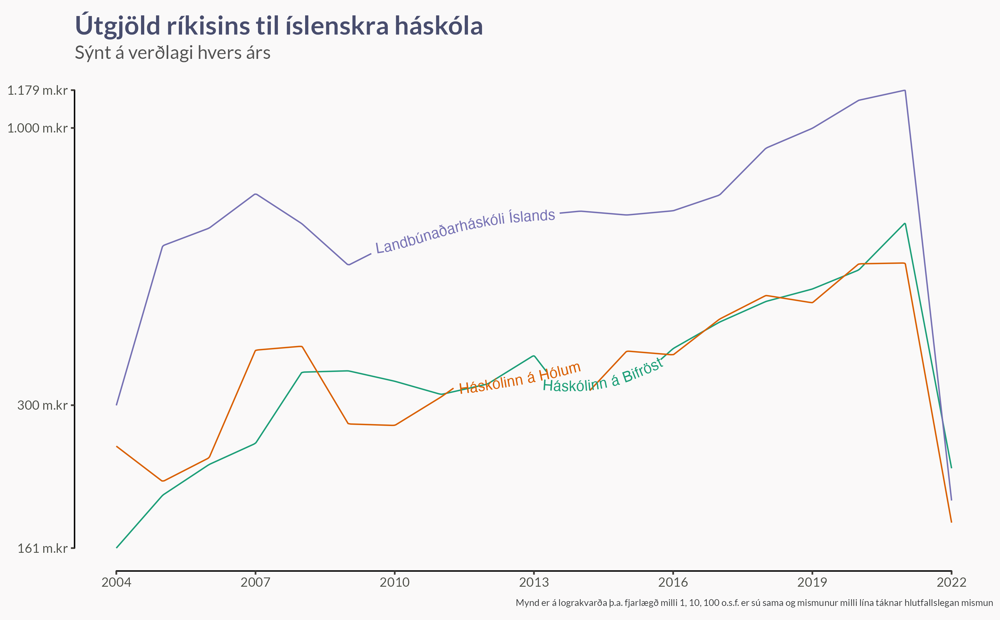

Ingvi og Arnar sendu mér eftirfarandi mynd, sem birtist í Stúdentablaðinu árið 2000.

Þetta er áhugaverð spurning. Til að svara henni skulum við sækja ríkisútgjöld frá rikisreikningur.is og tengja þau gögn við gögn Hagstofunnar um Nemendur ofan grunnskóla eftir skólum, lögheimili, kennsluformi og kyni 1997-2020. Svo skulum við athuga eftirfarandi:
- Hver hafa árleg útgjöld ríkisins til háskólanna á Íslandi verið?
- Hver var fjöldi nemenda í skólunum á sömu árum?
- Hvernig hafa útgjöld á hvern nemanda þróast?
Sem bónus skulum við skoða stærðarhagkvæmni háskólanna:
- Munu útgjöld á hvern nemanda minnka þegar nemendum fjölgar?
Útgjöld
Að neðan sjáum við þróun útgjöldanna á verðlagi hvers árs og á föstu verðlagi 2022 (leiðrétt fyrir hækkun vísitölu neysluverðs). Myndirnar eru sýndar á lograkvarða, sem þýðir að fjarlægðin milli 1, 10 og 100 er jafnmikil. Annað sem á við um lograkvarða er að ef mismunurinn á línum er alltaf sá sami er hlutfallslegur munur á útgjöldunum alltaf sá sami.


Nemendur
Við sjáum svo nemendafjöldann hér að neðan. Þar sem það er svona mikill munur á stærð skólanna þurfum við að teikna þessar myndir á lograkvarða líka, annars myndu minni skólarnir allir þjappast saman við botninn á myndunum.
Dreifing nemenda á stærri skólana hefur haldist frekar stöðug með uþb 70% í Háskóla Íslands, 8-10% í Háskólann á Akureyri og 15-20% í Háskólann í Reykjavík. Hinir skólanir eru svo með 1-5% af nemendum hver.


Útgjöld á nemanda
Hér byrjum við svo að baka köku úr gögnunum. Með því að tengja saman þessi tvö gagnasöfn getum við þæginlega teiknað upp þróun ríkisútgjalda á hvern nemanda í öllum Íslensku háskólunum.
Í upphafi tímabilsins eru útgjöldin per nemandi langhæst hjá Háskólanum á Hólum og Landbúnaðarháskóla Íslands. Þar hefur þó farið fram mikil hagræðing síðan þá og eru þessir skólar komnir með útgjöld á nemanda í kringum Listaháskóla Íslands. Fyrir utan þessa þrjá skóla er svo langt stökk niður til Háskólans á Akureyri, Háskóla Íslands og Háskólans í Reykjavík.
Ef við lítum á Staðan 2020 sjáum við útgjöld á hvern nemanda árið 2020, en sett fram á verðlagi 2000 samkvæmt vísitölu neysluverðs. Þar sjáum við að útgjöldin til HÍ og HR eru nánast nákvæmlega þau sömu og árið 2000, en framlög til HA hafa lækkað töluvert miðað við myndina í Stúdentablaðinu að ofan.


Bónus: Stærðarhagkvæmni
Hér að neðan sjáum við að það er einhver stærðarhagkvæmni í mörgum háskólunum, þ.e. útgjöld á hvern nemanda minnka þegar heildarfjöldi nemenda hækkar. Það er reyndar gott að hafa í huga að gæði náms og rannsókna, og kostnaður við rekstur þess vegna, eru ekki fönguð í þessari mynd heldur bara útgjöldin frá ríkissjóði.